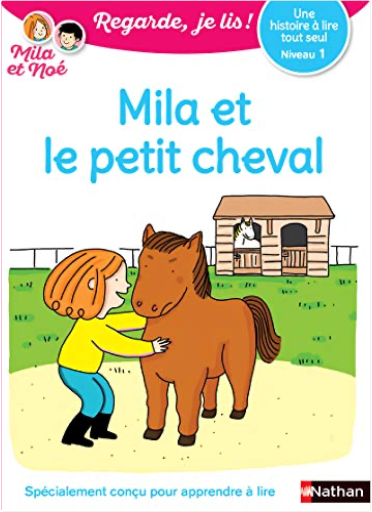

Books
Movies
Albums
Videogames
Games
BD
BD Camille
Blu-ray
Business
Camille
Comics
Cooking
Lego
Manga
Pauline
Photography
Sport
Star Wars
T'choupi
Travel
TV Shows
Un livre dont vous êtes le héro
Vinyl
Walt Disney
6
7
8
9
10
Regarde, je lis ! tome 8 : Vive les amis !
Éric Battut

Regarde, je lis ! tome 21 : Mila et le petit cheval
Éric Battut
Alors vous ne serez plus jamais triste
Baptiste Beaulieu
porsche 911: 50 ans de règne
serge bellu
la vie est belle
roberto benigni, vincenzo cerami
5
ma vie est un sport d'équipe
laetitia bernard
mes p'tits album - petit panda cherche un ami
claire bertholet
billy brouillard - les comptines malfaisantes, tome 3
guillaume bianco
coup de sang, tome 1 : animal'z
enki bilal
graphisme épuré
coup de sang, tome 2 : julia & roem
enki bilal
coup de sang, tome 3 : la couleur de l'air
enki bilal
Vivre d'aventures
Mathieu Blanchard
6
7
8
9
10


 Made with Delicious Library Made with Delicious Library
Made with Delicious Library Made with Delicious Library